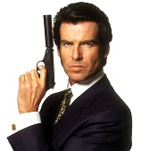

Goldeneye - An Underrated James Bond Flick
Among favorite James Bond movies, one will often hear the names Goldfinger, Dr. No, Casino Royale or Skyfall.
Goldeneye is a movie that also belongs on that list. Why, you might ask? Let's take a look!

{kind=link}
The Cast
- A young Pierce Brosnan plays the perfect James Bond on screen, an agent with an edge, deadly aim with his Walther PPK, but who can also charm his way out of (or into) any situation
- Izabella Scorupco plays the Bond girl. In Goldeneye, Scorupco's character, Natalya Simonova, is an integral part to the plot, unlike some earlier movies where the Bond girl is just a prop.
- 006 agent Alec Trevelyan, played by Sean Bean plays a realistic Bond villian, hellbent on getting revenge on those he feel betrayed him
- Goldeneye is also unique in that there exists a second Bond girl, a villan! Xenia Onatopp, played by Famke Janssen, was another strong Bond girl after years of weak characters. In fact, EW even voted the villan as #6 on their list of 10 best Bond girls!
The Setting
- A chemical base in the Siberian frontier being run by a rogue Russian general
- The vibrant resort city of Monte Carlo
- The city center of St. Petersburg as Bond drives a tank throughout downtown
- And the final showdown at a satellite base hidden away in a jungle in Cuba
GoldenEye was the first film not to use literature from Ian Flemming's novels, instead a unique story was devised by Michael France and took its name from Flemming's estate, GoldenEye, in Jamaica . A lot had changed in the hiatus of the Bond series as this was the first film since the collapse of the Soviet Union, the fall of the Berlin Wall and the end of the Cold War. Tom Chapman, Movie Pilot blogger# The above website does a good job at creating a simple list of points in support of their argument. I don't recognize much of their code, but they use plenty of images of gifs with each bullet point. They use headers and paragraphs for each point, as well as using emphasize for all movie names. They also include links to support some of their points.
